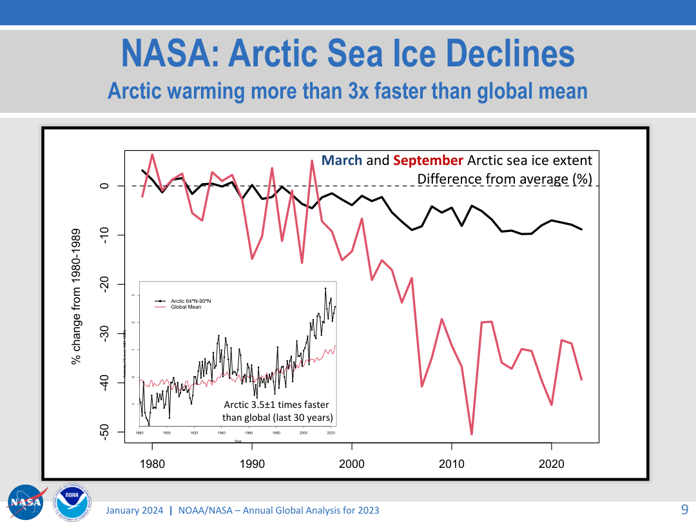

Harbor is a fictional task constructed by the authors and run with real APIs. The Arctic chart is a real NOAA/NASA document. Both are new cases; neither reconstructs historical SlideVQA outputs.
Case 1 · raw-answer control → failure → targeted repairThe model was right; a downstream check was wrong
Start with the simplest comparator
The operating-guide answer already says the retention duration is missing and points to the policy. Showing that explanation is enough to suggest changing sources. Extra logs do not prove an easier user task.
Read the original provider answer
CITATION LIST
CITATION【1】
START_PHRASE: Data retention is specified in the
END_PHRASE: guide does not state a duration.
FINAL ANSWER
The provided context does not state how many days the Harbor sensor pilot retains raw sensor logs. The operating instructions explicitly say that data retention is specified in the separate Harbor data policy, and that this operating guide does not state a duration【1】. Therefore, the number of days cannot be determined from the given document.
Original provider record · Operating guide
Inspect the actual error
With the policy selected, a repeated answer correctly says logs are deleted after 17 days and that the policy covers Harbor raw logs. Strict verification rejects the explanation and withholds the answer.
Rejected claims in the unchanged original repetition
The policy states that raw sensor logs must be deleted after 17 days it applies specifically to raw sensor logs collected by the Harbor pilot.
Full original response · Actual policy text
| Diagnostic question | Raw answer + evidence | Added stages + source replay |
|---|
| Which source is missing? | Already identifies the policy. | Separates retrieval success from missing answer support. |
| Is the rejection correct? | Policy supports the explanation. | Identifies the rejected claim and final guardrail. |
| Which internal check caused it? | Not identifiable from the answer alone. | Lexical coverage is 8/12; 9 matching tokens are required. |
Intervention: match regular verb forms, then replay identical claims
The lexical matcher treats delete and deleted as different. The supplied patch matches regular -d/-ed variants while retaining the threshold and contradiction checks. On identical recorded claims, the decision changes from unsupported to supported. Wrong numbers, negation, and missing-support controls remain rejected.
Token-level diagnosis · Unpatched replay · Patched replay · Source patch
All five live pairs on patched source
| Repeat | Source | Verification | Final action |
|---|
| 1 | before | unknown | abstain |
| 1 | after | supported | return |
| 2 | before | unsupported | abstain |
| 2 | after | supported | return |
| 3 | before | unsupported | abstain |
| 3 | after | supported | return |
| 4 | before | unsupported | abstain |
| 4 | after | supported | return |
| 5 | before | unknown | abstain |
| 5 | after | supported | return |
All five policy turns return the supported duration; all five guide-only turns abstain. The unpatched verifier also accepts the five newly generated policy claim strings. These live counts are not evidence of an overall improvement rate; the identical-output replay isolates the specific repair.
Case 2 · wrong text answer → inspect path → select imageThe same model changes its answer when it receives the chart
Question: What value does the pink curve reach at the far right of the main chart? Give the approximate plotted value.

Actual model input: original report page 9, indexed as excerpt page 1. Source: NOAA/NASA Annual Global Analysis for 2023. A human visual reading sets an approximate range of −42% to −38%; it is not the underlying data series.
| Condition | Actual path/input | Recorded answer |
|---|
| Automatic routing | Text; no image sent | About −50% |
| Manual page-image route | One image; actual visual model call | About −40% |
| Generation-only control | Same visual request, only image removed | About −50% |
Automatic answer
The pink curve at the far right of the main chart reaches approximately -50%.
This indicates that the Arctic sea ice extent in March and September has declined by about 50% compared to the 1980-1989 average 【1】.
Fixed visual answer
The pink curve, representing the September Arctic sea ice extent difference from average (%), reaches an approximate value of about -40% at the far right of the main chart.
Image-removed control
The pink curve at the far right of the main chart reaches an approximate value of -50% change from the 1980-1989 average.
Automatic trace · Visual trace · Actual visual request and response · Image-removed request and response
The requested and returned model is gpt-4.1-mini-2025-04-14. The captured image bytes and their SHA-256 are supplied. The runtime's local_qwen3_vl label names a generic adapter, not the actual model. There is no cached visual answer in this call.
The route change is manual, not automatic recovery. Verification is off in all compared runtime conditions. One preselected page and a deterministic local selector isolate generation; this is not a retrieval-quality benchmark.
Retained preliminary failures and adaptive choices
A longer question about both March and September percentage changes selected the image route but failed the required-slot adequacy gate before generation. The direct-reading question was adopted after that failure. Its automatic run then chose text and gave the wrong value; the fixed visual condition was added as the intervention. An earlier isolated configuration attempt failed embedding authentication. All are retained; this is an adaptively constructed walkthrough, not a prespecified benchmark sample.
Required-slot failure · Original longer question · Setup failure
Fresh execution of the distributed recipe
The supplied chart script was also executed in another empty runtime. It again gives -50% with text/auto, -40% with the image, and -50% when the image is removed. All records are retained; this is repetition of the same question, not an independent task.
Fresh visual call · Fresh image-removed control
What remains unresolved
- No participant experiment establishes faster or easier diagnosis than Kotaemon or a raw-answer view.
- The verifier repair addresses one observed lexical failure; it is not a general reliability guarantee.
- The chart records show a manual visual intervention, not automatic recovery. The original video is unchanged.
- Historical SlideVQA generated strings and actual paths are still missing; their equal scores have no confirmed causal explanation.
Run python review_followup/verify_followup.py from the supplement root for an offline audit. See README and provenance for source identity and fresh execution. No credentials or runtime databases are distributed.